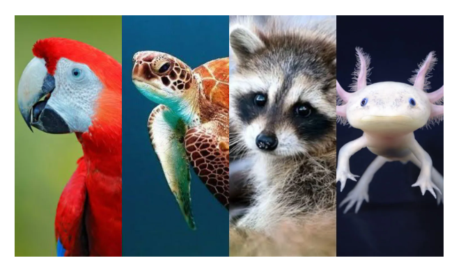

12 ANIMALES EN PELIGRO DE EXTINCION
-
MAMIFEROS
1. Ocelote (Leopardus pardalis):
Una antigua leyenda azteca cuenta cómo el ocelote, que al principio de los tiempos tenía la piel lisa, fue atacado por un nuevo cometa que apareció en el cielo, y al que el animal recibió con desconfianza y hostilidad. Sus quemaduras se transformaron en manchas. La historia habla de un desencuentro entre un animal y un astro, pero también de la importancia de ser hospitalarios con los recién llegados. El felino más representativo de la cultura mexicana posee un tamaño mediano, un oído muy desarrollado y la capacidad de deslizarse entre la vegetación sin ser detectado por sus posibles presas. Prefiere la noche al día y la soledad a la compañía. A pesar de que quedan más ocelotes vivos que individuos de otras especies amenazadas, estos podrían extinguirse pronto.
2. Jaguar (Panthera onca):
El jaguar mexicano también podría desaparecer próximamente. Su población se ha ido reduciendo por considerarlo peligroso. Además, a menudo estos animales, en peligro de extinción en México, se ven obligados a desplazarse fuera de sus hábitats en busca de comida puesto que, cada vez más, los entornos naturales en los que viven son destruidos.
3. Mapache de Cozumel o pigmeo (Procyon pygmaeus):
El mapache de Cozumel o pigmeo es endémico de la isla de Cozumel. Este pequeño mamífero se distingue del mapache común (que también está en peligro de extinción) por presentar una banda negra en el rostro y por su cola dorada, así como por la forma de la nariz y de los dientes. En 1901 fue clasificado como una especie aparte. El frágil equilibrio ecológico isleño y la acción humana lo han llevado al borde de la desaparición.
4. Conejo matorralero de la Isla San José (Sylvilagus mansuetus)
Este curioso herbívoro habita en otra isla mexicana, la de San José. Con sus largas orejas, ojos despiertos como ventanas y un pelaje suave y grisáceo, el conejo matorralero de la Isla San José se encuentra amenazado por causas como el crecimiento poblacional de sus depredadores, además de por el deterioro de su hábitat y la caza ilegal. Se estima que quedan entre 25 y 35 ejemplares por kilómetro cuadrado en todo el territorio insular.
-
MARINOS
5. Ballena (Balaenidae):
Como si de una migración a través del tiempo y la totalidad universal se tratase, esta monumental criatura nada desde su condición mamífera a la protección de otros animales marinos en peligro de extinción en México, a los que sostiene con su sola presencia. A su vez, el océano entero hace posible la vida en la Tierra: la fascinación que el ser humano siente por las ballenas adquiere aquí una dimensión atemporal. Hoy, muchas personas acuden a lugares como México para poder verlas. La Riviera Nayarit, en el corazón del Pacífico, es uno de los destinos preferidos para avistar ballenas de forma ética. Cerca de Iberostar Selection Playa Mita se encuentran las Islas Marieta, un parque nacional cuya belleza cautivó al oceanógrafo Jacqes Cousteau y donde durante los meses de invierno es posible ser testigo de la imponente aparición de la ballena jorobada.
6. Tiburón ballena (Rhincodon typus):
El tiburón ballena es el pez de mayor tamaño, pudiendo medir hasta doce metros de largo. A pesar de su inquietante rostro achatado y de su gran envergadura, se trata de un animal dócil y tranquilo. En varios puntos de México como Quintana Roo y Baja California, existe la posibilidad de nadar junto a tiburones ballena entre los meses de junio y septiembre, respetando de este modo los ciclos reproductivos naturales del animal. Es una manera ética de poder visitarlos en su propio entorno y sin interferir en él, siempre de forma legal y controlada.
7. Vaquita marina (Phocoena sinus):
El manatí del Caribe o de las Antillas es el único mamífero acuático herbívoro de todo el planeta. Habita en aguas tropicales tanto dulces como saladas. Con una apariencia apacible que recuerda a una roca animada, casi mitológica, su cuerpo gris y marrón puede llegar a medir entre 3 y 4,5 metros de largo. Se estima que quedan menos de 2500 individuos adultos vivos, con una previsión de decrecimiento de más del 20% para las próximas dos generaciones. La primera causa son los impactos que sufren contra los barcos. Además, son capturados por su carne, que empezó a ser consumida con la llegada de los españoles a América (cuando éstos descubrieron que los manatíes eran animales y no sirenas, tal y como creyeron en un principio).
-
AVES
8. Guacamayo rojo (Ara Macao):
El guacamayo rojo es uno de los más expuestos por la crisis climática y la destrucción de hábitats. Antes se le podía encontrar en seis estados del país, ahora únicamente se le localiza en la Selva Lacandona. Sus hermosos colores, entre los que destaca el rojo, y su aura magnética llevaron a las civilizaciones maya y azteca a identificarlo con el dios del sol y del fuego. Además, gracias a su carácter sociable, su existencia siempre ha estado ligada a la del ser humano, con quien durante siglos ha convivido en armonía y libertad.
9. Loro de cabeza amarilla (Amazona oratrix):
El loro de cabeza amarilla posee la facultad de imitar numerosos sonidos, entre ellos, la voz de los seres humanos. Muchos de estos seres sintientes pasan sus vidas encerrados en jaulas, algo que va en contra de su naturaleza, ya que su lugar está en los bosques tropicales y en las junglas. La belleza de verlos en su hábitat natural, rodeados de vegetación y de vida, nos conecta con esa naturaleza animal a la que también pertenecemos.
10. Quetzal (Pharomachrus mocinno):
Otra de las aves en peligro de extinción en México es el quetzal. Además de en México, también vive en Guatemala, Honduras, El Salvador, Nicaragua, Costa Rica y al oeste de Panamá, aunque es en territorio mexicano donde se encuentra más amenazado. Su nombre procede del náhuatl y significa “hermosa pluma”. Verde esmeralda, azul vibrante, rojo fuego, marrón... los colores de su plumaje son tan impresionantes que tanto los mayas como los aztecas lo consideraban un pájaro sagrado con poderes mágicos. Seguramente también influirían su gran sentido de la orientación y sus elocuentes silbidos.
-
ANFIBIOS Y REPTILES
11. Tortuga caguama o boba (Caretta caretta):
la tortuga caguama también se la conoce como tortuga boba, cabezona o amarilla. Para los pueblos originarios, es la madre que engendró a toda la Humanidad. Posee glándulas lagrimales detrás de cada ojo para execrar del exceso de sal tras la ingesta de agua marina. Por eso, cuando está en tierra, parece que llora. Es carnívora y se alimenta de pequeños moluscos y mariscos, aunque en ocasiones complementa su dieta con algas y plantas del fondo del mar. Las hembras acuden a desovar al lugar exacto en el que nacieron. En las costas de Baja California es posible presenciar la eclosión de los huevos y el recorrido de las tortugas recién nacidas hacia el mar con distancia y respeto.
12. Ajolote o axolotl (Ambystoma mexicanum):
“En la biblioteca Saint-Geneviève consulté un diccionario y supe que los axolotl son formas larvales, provistas de branquias, de una especie de batracios del género amblistoma. Que eran mexicanos lo sabía ya por ellos mismos, por sus pequeños rostros rosados aztecas. (...) capaces de vivir en tierra durante los períodos de sequía, y que continúan su vida en el agua al llegar la estación de las lluvias.” En uno de sus cuentos, titulado Axolotl, el escritor argentino Julio Cortázar describe así al ajolote. El relato explora la identificación del narrador con estos fascinantes anfibios, a los que observa compulsivamente hasta que, como si siempre hubiese sido así, acaba convirtiéndose en uno.

FUENTE:
https://www.iberostar.com/inspiration-guide/ecoturismo/animales-peligro-extincion-en-mexico/#:~:text=Pez%20Loro%20(Scarus%20ghobban),a%20lo%20largo%20del%20tiempo.
https://atiempo.tv/nacional/animales-en-peligro-de-extincion-la-problematica-y-cuales-especies-peligran-en-mexico/
-
-